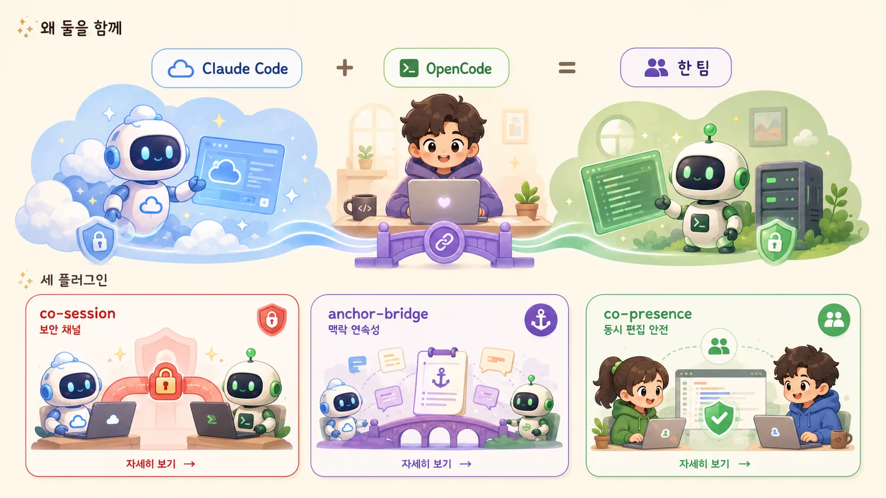

Open-source framework · Claude Code ↔ OpenCode
🔗
harness-interop
혼자 쓰던 두 하니스를, 한 팀처럼.
Make Claude Code and OpenCode work as one team.
AI 코딩 하니스 Claude Code 와 OpenCode 를 상호운용시키는 프레임워크입니다. 중앙 서버도 상주 데몬도 없는 순수 파일로 동작해서, 데몬·서버가 필요한 도구는 못 들어가는 폐쇄된 보안망에도 그대로 들어갑니다.
AI 코딩 하니스는, 이미 개발의 표준이 되었습니다.
그 효과는 통제된 연구로 입증됐습니다.
55%
더 빠른 작업 완료
GitHub 통제 실험 · 같은 과제 2h41m → 1h11m · 완료율 70%→78%
76%
개발자가 AI 도구 사용·도입 예정
전문 개발자 62% 사용 중 · Stack Overflow 2024 설문(65,000+명)
16~45%
고성과 조직의 생산성·품질 향상
McKinsey · 워크플로 재설계가 전제
효과는 작업·팀·숙련도에 따라 다르지만, 이 도구가 개발의 표준이 되었다는 데에는 이견이 없습니다.
가장 중요한 활용 · 메모리 반도체 보안 환경
국가핵심기술 · 산업기술보호법
메모리 핵심기술 엔지니어는 cloud AI 를 못 씁니다.
메모리는 국가핵심기술로 지정돼 해외 cloud 로의 반출이 법으로 금지됩니다 · 회사 NDA 로도 풀 수 없습니다. 정당한 비기밀 질문조차 권한이 없어, 엔지니어는 때로는 사내 PC 를 두고 개인폰에 손으로 쳐서 묻습니다 · 아무도 통제·감사하지 못한 채로.
harness-interop 은 그 금지가 만든 공백을, 통제된 채널로 메웁니다. 지능은 들여오고 기밀은 못 나가는 단방향 다리로 · 금지됐던 cloud 생산성을 사고 위험 없이 보안 환경 안으로. → co-session 으로 자세히
왜 둘을 함께
☁ Claude Code
가장 앞선 cloud 모델로 똑똑합니다
+
🖥 OpenCode
오픈소스 · 로컬·사내 모델까지 자유롭게 붙일 수 있습니다
=
⚡ 한 팀
필요에 따라 골라 쓰되, 맥락·세션·안전을 공유합니다. harness-interop 이 그 사이를 잇습니다.
세 플러그인

왜 폐쇄된 보안망에도 설치할 수 있나
이 프레임워크는, 순수 파일뿐입니다.
세 플러그인 모두 순수 파일로만 동작합니다. 상주 데몬도, 중앙 서버·DB도, 외부 네트워크 호출도 없습니다. 그래서 데몬형·서버형 도구는 반입 불가한 폐쇄된 보안망에도 그대로 들어가고, 오간 것은 git 으로 눈에 보이고 감사됩니다.
상주 데몬 0
중앙 서버 0
순수 파일
프로젝트 로컬
git 투명